The Docker Desktop replacement for macOS. Native SwiftUI. Hardware-level isolation. Sub-second boot. Open source forever.
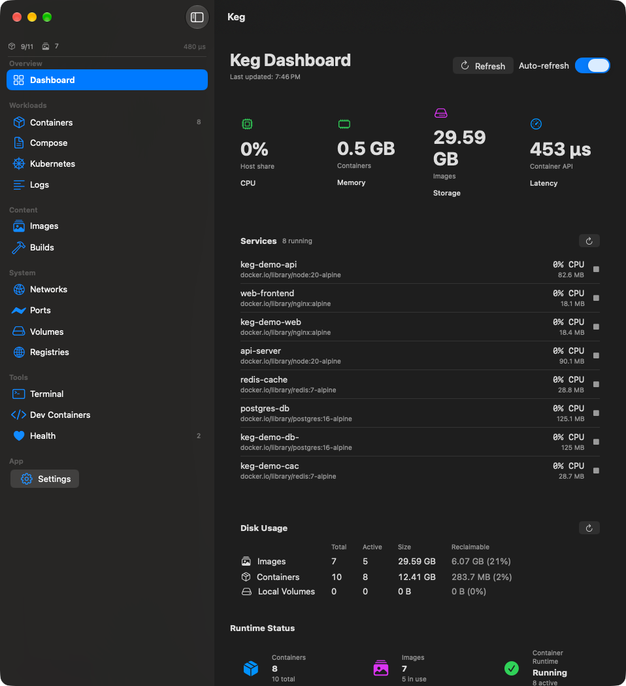
● 4 running 455 µs · container api latencyContainers, images, networks, volumes, builds, Compose, Kubernetes — plus guided onboarding, a health score, port dashboard, embedded terminal, and dev containers. All native. All fast.
618ms average container start. No daemon warmup, no shared VM spin-up. Each container boots its own micro-VM in under a second — 50× faster than Docker Desktop's cold start.
Per-container VMs via Virtualization.framework. Real hardware boundaries, not namespace tricks.
Docker Desktop idles at 500MB to 2GB. Keg gives you your RAM back.
Full Engine API on a Unix socket at ~/.keg/docker.sock. docker ps, docker run, docker compose. It all works.
Dependency-ordered bring-up, per-service output, env vars, volumes, networks. Your compose files, zero changes.
One-click K8s cluster. kindest/node + kubeadm. kubectl ready in 90 seconds.
A single 0–100 score across every container, with per-container memory and CPU signals. Spot the one that needs attention at a glance.
Every published port across every container in one table, with one-click localhost URLs. No more hunting for what bound 8080.
Embedded shell with the container CLI wired in, merged multi-container log streams, and .devcontainer project support built in.
Apache 2.0, free forever. No seat licenses, no feature gates, no telemetry.
Three experience levels — Getting Started, Comfortable, Full Control — with first-run quick starts (a 5-second demo, a web server) and inline help on every section.
Every toolbar action carries its name, every disabled button explains itself, and status lives next to the thing it describes. You should never have to guess.
Twelve real screens from the shipping app — light and dark mode, nothing mocked. A live three-service Compose stack, a cache container, and real logs.
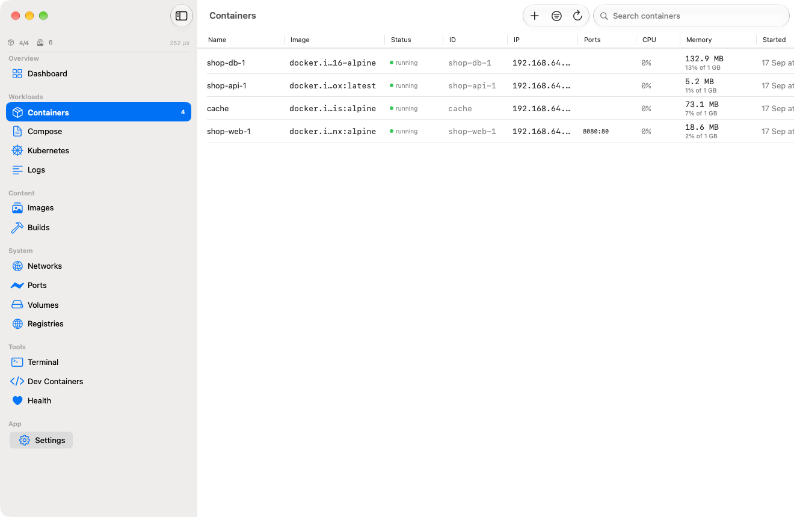
getting started → full control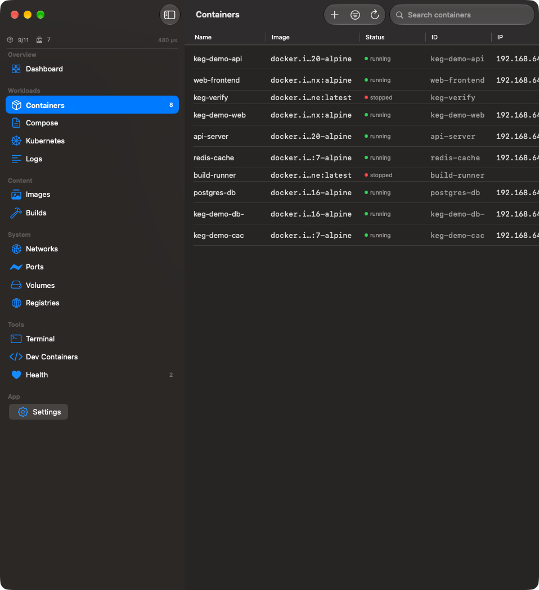
4 running · live stats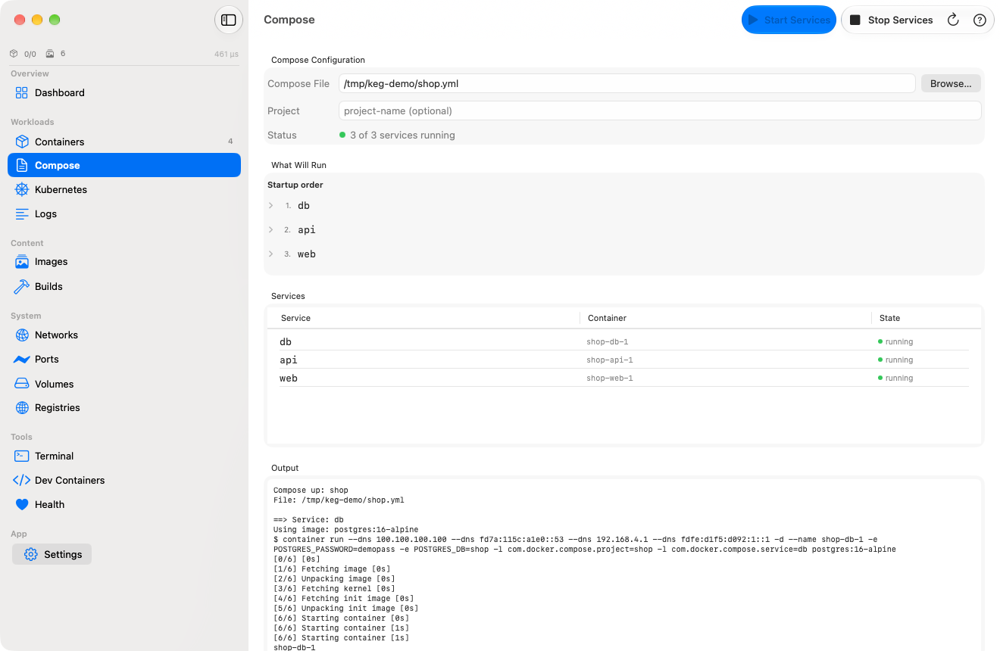
3 of 3 services running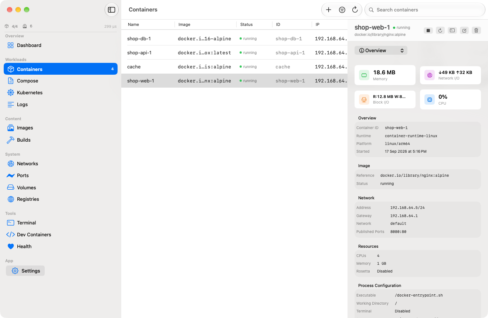
inspector · shop-web-1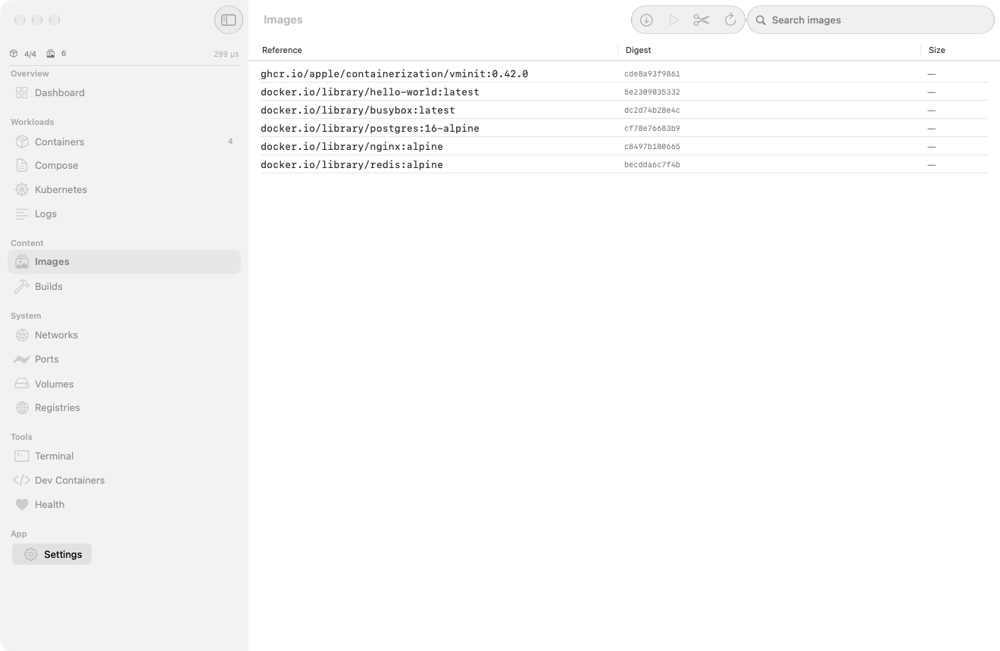
6 images · digests + sizes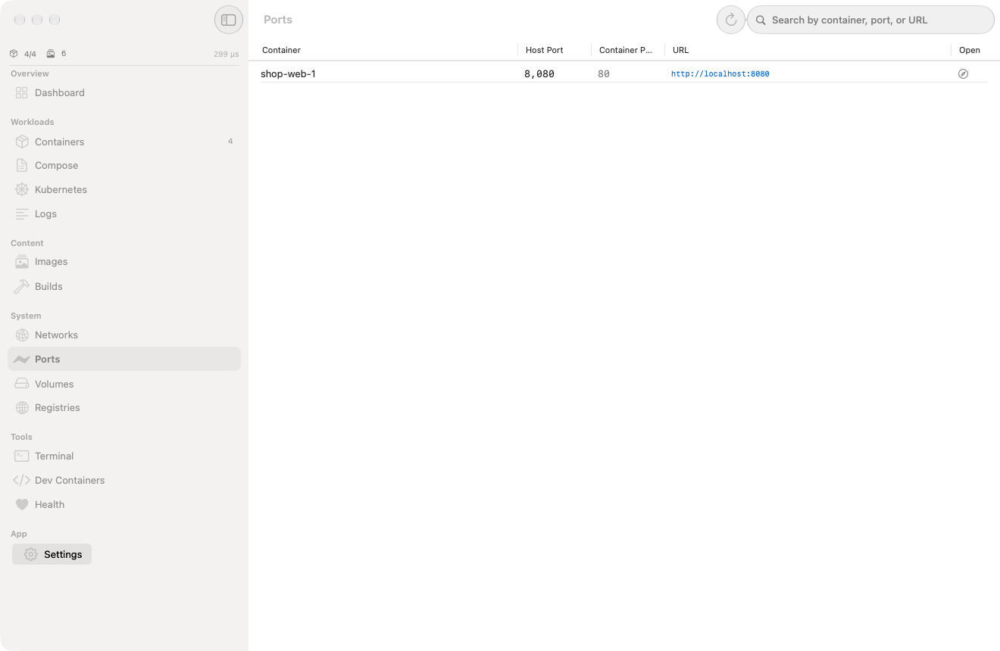
8080:80 → localhost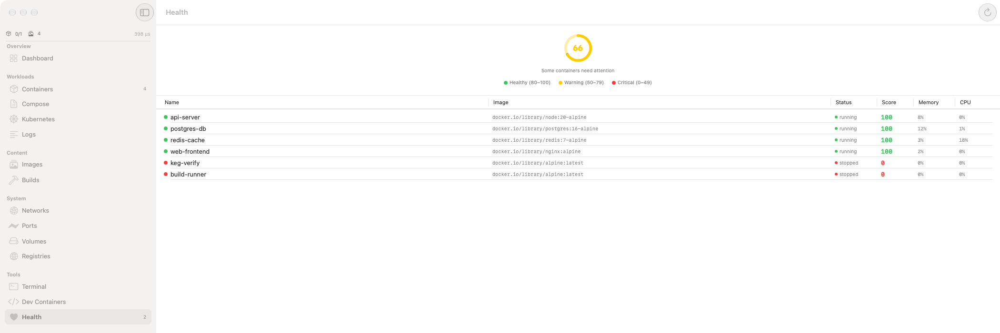
score 81 · 4 healthy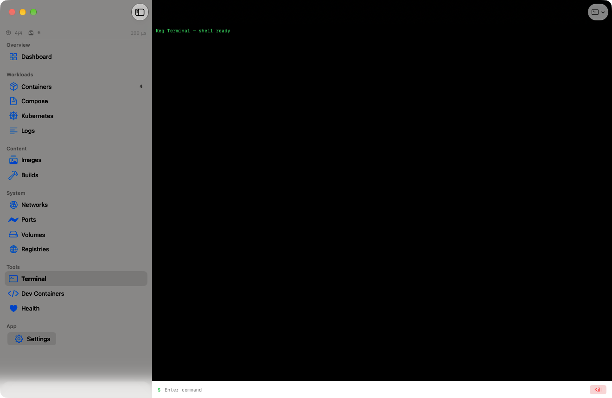
container cli · built in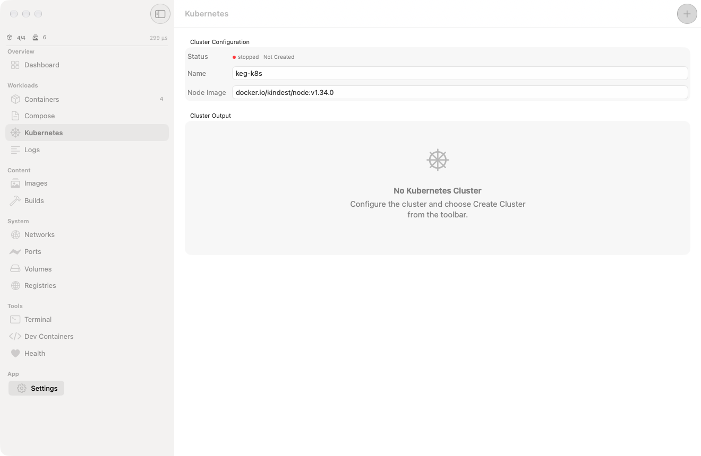
kindest/node v1.34.0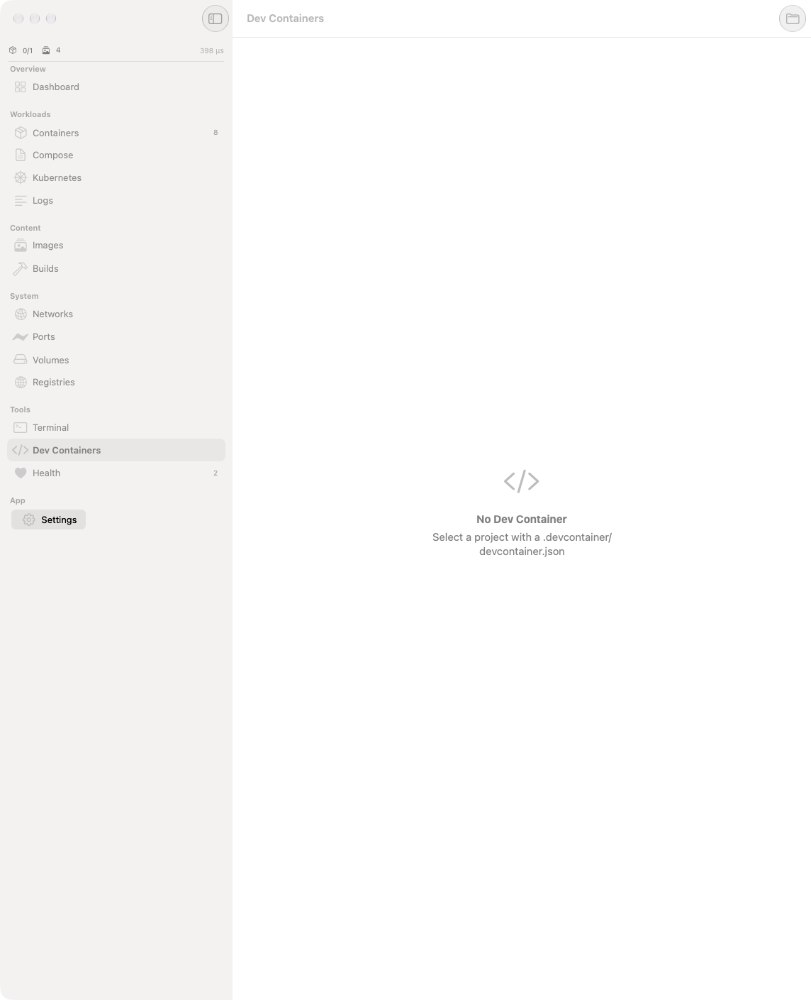
.devcontainer support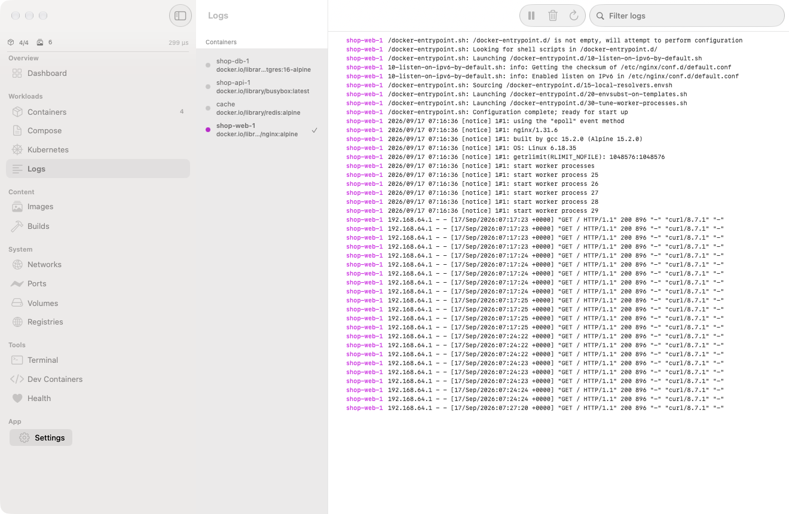
merged streams · 2 containersSame CLI. Same Compose files. Same API. Just faster, lighter, and with real isolation.
Dependency ordering, networks, volumes, port mapping, env vars. Keg's orchestrator handles it all.
Full cluster inside an Apple Container. kubeadm, CNI, kubeconfig. Ready for kubectl.
One click in Keg. kindest/node boots with kubeadm init.
Apply manifests. Deployments, services, configmaps, secrets.
Scale replicas, rolling updates, exec, logs. Full kubectl.
Benchmarked against Docker Desktop and OrbStack.
| Docker Desktop | OrbStack | Keg | |
|---|---|---|---|
| Runtime | containerd in Linux VM | containerd in Linux VM | Apple VMs |
| Isolation | Process-level | Process-level | Hardware |
| Boot time | ~30s | ~2s | <1s |
| Idle RAM | ~2 GB | ~500 MB | 69 MB |
| Docker API | ✓ | ✓ | ✓ |
| Compose | ✓ | ✓ | ✓ |
| Kubernetes | ✓ | ✓ | ✓ |
| Health score | — | — | ✓ |
| Dev containers | ✓ | — | ✓ |
| Native macOS | Electron | Native-ish | SwiftUI |
| License | $9/seat/mo | Paid | Apache 2.0 |
Requires macOS 26 (Tahoe) and Apple Silicon (M1/M2/M3/M4).